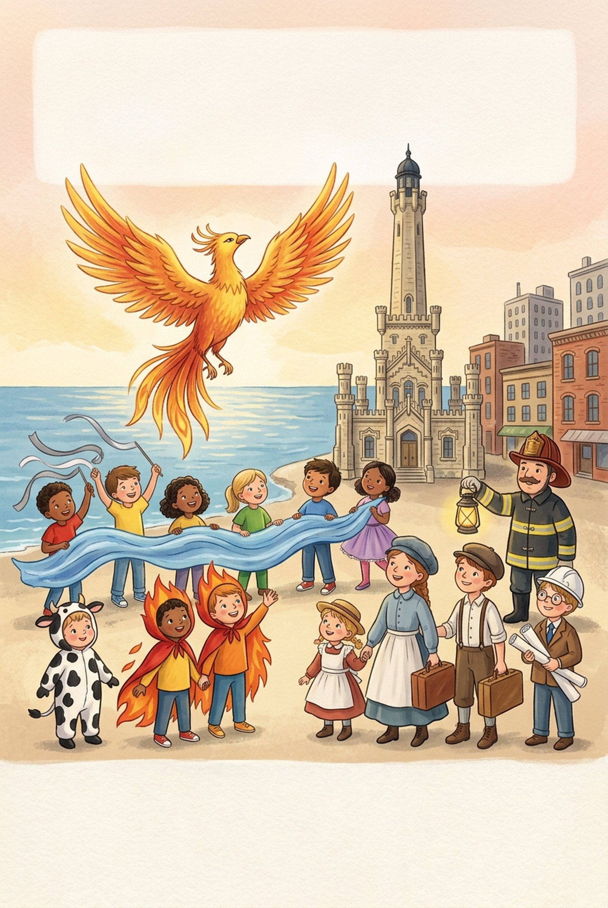

presents
The Phoenix on the Lake
The Story of the Great Chicago Fire
A play by José M. Fernández
With all our students, from Pre-K to 6th grade
Date:
Time:
Place:
· Free admission
Type in the dotted spaces (click on them) the name of the school, the date, the time, the place and the city. Then press “Print”. It prints on one letter-size sheet, portrait.

presents
The Story of the Great Chicago Fire
A play by José M. Fernández
With all our students, from Pre-K to 6th grade
· Free admission